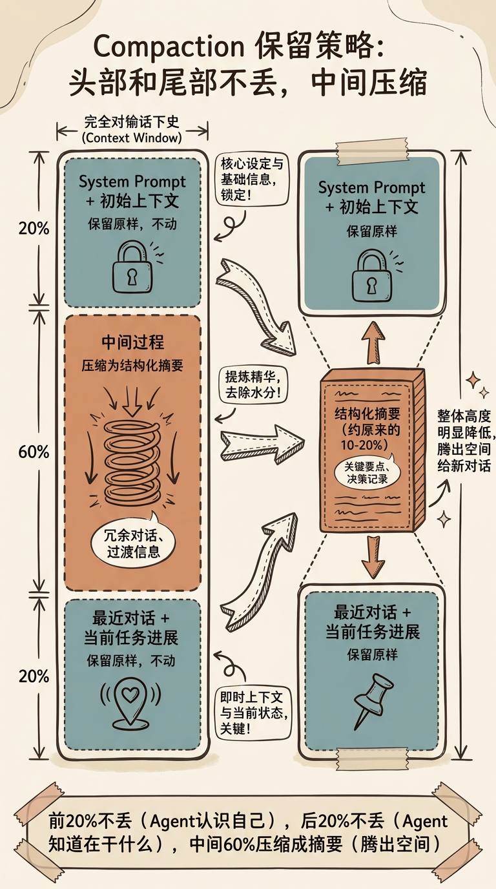
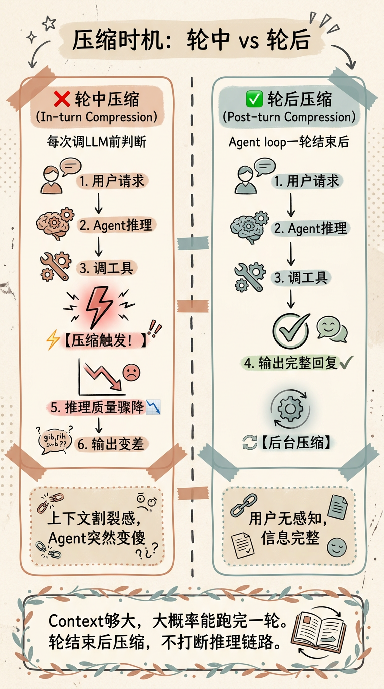
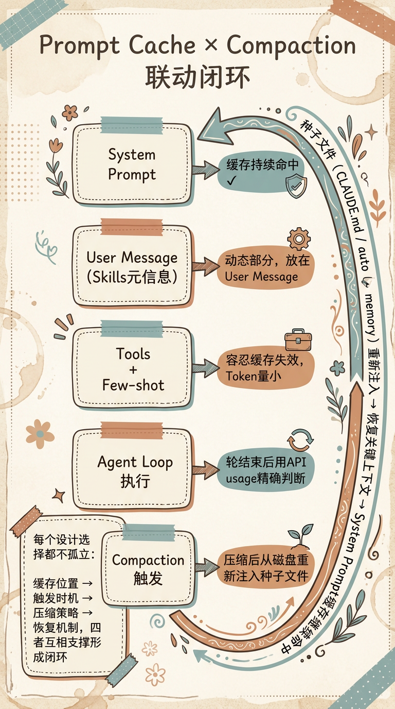

Compaction：让Agent长时间跑下去的上下文压缩术
Agent 能不能长时间跑下去，最终都会撞上同一个问题：上下文窗口是有限的。
一次任务刚开始时，模型能看到完整的 System Prompt、用户需求、工具结果和中间推理。跑久之后，对话历史越来越长，工具输出越来越多，再大的 context window 也会被填满。
这时候就需要 Compaction：把旧上下文压缩成更短、更结构化、仍然足够有用的摘要，让 Agent 继续往下跑。
Compaction 不是一个简单的“把历史变短”功能。它牵涉到压缩策略、触发时机、Token 预算、Prompt Cache、种子文件重新注入，以及 Agent loop 本身怎么设计。
先搞清楚一个问题：压缩不是记忆
很多人把Compaction和Memory混在一起说。它们是两件完全不同的事。
Compaction解决的是单session内的上下文溢出。 你跟Agent聊了50轮，对话历史越来越长，200K的context窗口快装不下了。Compaction就是把这个对话历史压缩一下，让它能继续跑下去。
Memory解决的是跨session的信息共享。 你今天用Agent改了一个API的接口规范，明天开新session的时候，你不希望它又从零开始。Memory就是把这些偏好、决策、踩过的坑持久化下来，下次启动时加载。
一个是同一次对话里的生存问题，一个是多次对话间的延续问题。
类比一下：Compaction像你收拾行李——箱子快塞不下了，你得把旧衣服压缩成真空袋，腾出空间放新东西。Memory像你搬了新家之后，把老家带过来的东西分类放进不同的柜子——下次找的时候不用回老家翻。
两者的技术手段也完全不同：
| 维度 | Compaction | Memory |
|---|---|---|
| 目的 | 维持单session内上下文不溢出 | 跨session的信息共享和积累 |
| 触发时机 | Context使用率到阈值时自动触发 | 新session启动时加载 |
| 存储方式 | 通常在当前会话链路内生效 | MD文件/SQLite/向量数据库 |
| 信息流向 | 对话历史 → 摘要 | 历史 → 提炼 → 持久化 |
| 用户感知 | Agent输出质量可能突然波动 | 新session”记得”之前的偏好 |
搞清楚这个区别之后，我们聚焦Compaction。
压缩策略：保留关键原文，压缩中间过程
不同 Agent 框架的压缩策略不一样，但有一个共性思路——不是一刀切地删掉前面的对话，而是有选择地保留关键信息。
一种常见的策略是这样的：
- 头部关键上下文保留原样——这部分通常是 System Prompt、最初任务目标、项目背景、用户偏好。它们决定 Agent 到底在做什么
- 尾部最近上下文保留原样——这是最近的对话、工具调用结果、待办事项和当前卡点。它们决定 Agent 下一步怎么做
- 中间过程压缩为摘要——这部分是”过去做了但已经不那么重要”的执行轨迹。可以交给一个 LLM 调用，把长对话压缩成结构化摘要

这个策略的直觉很简单。你回忆一下自己处理一个长任务的过程——你不需要记住每一分钟的细节，但你一定记得最开始的目标和现在做到哪了。中间的过程，你只需要一个结构化摘要就够了。
这里的”头部/尾部/中间”不是固定比例。20%+60%+20% 只是一个容易理解的示意。真实系统会根据模型上下文窗口、当前任务长度、工具输出大小和摘要质量动态调整。
压缩时机：优先不打断 Agent loop
一个关键设计问题是：到底什么时候压缩？
如果每次调用 LLM 之前都无脑压缩，会导致上下文割裂感。
你想象一下——Agent 正在执行一个复杂任务，中间调了好几个工具，正要推理下一步，突然 context 被压缩了。它之前仔细分析的中间结果全变成了摘要，信息密度骤降。这时候 Agent 的输出质量可能会突然变差，因为它丢失了关键细节。
用户看到的现象就是：Agent前面一直很聪明，突然变傻了，然后又慢慢恢复。体验很差。
所以一个稳妥原则是：能在 Agent loop 一轮结束后压缩，就尽量在轮后压缩。
Agent loop是什么？简单说就是Agent接收用户请求→规划→调工具→观察结果→继续推理→最终回复这个完整周期。
一轮结束后触发压缩通常更合理，原因有三个：
- 多数任务的一轮 loop 能在当前 context 内跑完——尤其是没有读取超大文件、长日志、批量网页内容的时候
- 信息是完整的——轮结束时，任务已经完成了一个完整阶段。这时候压缩不会”打断思路”
- 不会有割裂感——用户收到的是完整的回复，压缩发生在后台，用户无感知

但这不是绝对规则。如果下一次 LLM 调用已经必然超过上下文窗口，系统就必须在调用前压缩，哪怕这发生在一个大任务中间。更准确的说法是：压缩时机要在”不中断推理”和”不超过上下文窗口”之间做权衡。
Token预算：后验 usage 很有用，但不能替代前置预算
知道了”什么时候压缩”，还差一个前置问题——怎么知道该压缩了？
你总得知道当前 context 用了多少 token，才能判断是否到了阈值（比如 80% 或 95%）。这个问题看起来简单，其实是个挺有意思的工程问题。
方法一：字符数÷4
这是最快的估算方法。原理是：在英文语境下，大约4个字符≈1个token。
统计当前messages的字符总数，除以4，再除以模型的context window大小（比如200K），就知道使用率了。
优点：极快，零开销。
缺点：不准。 不同语言、代码、JSON、Markdown、工具输出的 token/字符比例差别很大。如果你只依赖这个方法，到了该压缩的时候可能没压缩，context 直接爆了。
方法二：Tokenizer
用模型对应的tokenizer（比如tiktoken）对整个messages做精确分词计数。
优点：准确。
缺点：有成本。现在的 Agent 一轮对话可能涉及几十个文件、几十次工具调用，messages 非常长。每次调 LLM 之前都跑一遍完整 tokenizer，会带来额外开销。不过在真正接近上下文上限时，这个成本通常是值得的。
方法三：API返回的 usage
这是很重要的后验信号。
每次调用LLM API，返回结果里都会带一个usage字段。以Anthropic为例：
1 | usage: { |
OpenAI的类似：
1 | usage: { |
Agent loop 结束后，最后一次 LLM 调用返回的 usage.input_tokens、prompt_tokens 或类似字段，能告诉你：刚刚这次请求，服务端实际看到了多少输入 token。
这比字符数估算可靠得多，也适合作为压缩阈值判断的输入。但它不是”当前 session 总消耗 token 数”，也不应该用 total_tokens 来判断下一轮输入是否会超窗，因为 total_tokens 还包含输出 token。真正要控制的是下一次请求将发送给模型的输入上下文长度。
| 方法 | 速度 | 准确度 | 适用场景 |
|---|---|---|---|
| 字符数÷4 | 极快 | 不准（误差累积） | 首轮粗估 |
| Tokenizer | 慢 | 准确 | 不适合频繁调用 |
| API usage | 直接可用 | 对刚刚那次请求准确 | Agent loop结束后的后验判断 |
比较稳的做法是混合使用：
- 平时用字符数或增量计数做快速粗估
- 接近阈值时用 tokenizer 或模型服务返回的 usage 校正
- 一轮 loop 结束后，用最后一次 usage 判断是否需要后台 compaction
- 下一次调用前，仍然检查即将发送的 messages 是否可能超过模型窗口
所以这里不能把某一种计数方法当成放之四海皆准的答案。正确的是把 token 预算放到 Agent loop 的生命周期里看：调用前防止超窗，调用后校正实际用量，轮结束时决定是否压缩。
为什么这些东西是一体的：Prompt Cache
聊到这儿，你可能会觉得Compaction是个独立的问题。其实不是——它跟Prompt Cache和上下文组织方式关系很密。
Prompt Cache 是 LLM 提供商（Anthropic、OpenAI、Google 等）做的一个优化：如果多次请求的 prompt 前缀相同，可以复用之前计算的结果，降低延迟和成本。
这类缓存通常和前缀匹配有关。简单说，越稳定、越靠前的 prompt 部分，越适合被缓存；越动态、越靠后的部分，即使变化，也只影响后面的缓存命中。
这跟Compaction有什么关系？
关系大了。当你设计一个Agent系统的时候，Skill元信息放在哪直接影响缓存效率：
| 放在System Prompt | 放在User Message（System Reminder） |
|---|---|
| Skill增减→System Prompt变化→缓存全废 | System Prompt不变→缓存持续有效 |
| 每次都要重新处理整个System Prompt | 只有动态部分需要重新处理 |
所以设计 Agent 上下文时，一个常见原则是：稳定内容尽量放在前面，动态内容尽量放在后面。 这样 System Prompt、长期规则、项目说明这些稳定部分更容易命中缓存；Tools、Skills、检索结果、当前任务上下文这些动态内容变化时，对缓存的破坏范围更小。

这套设计形成了一个完整的闭环：
- System Prompt保持稳定 → Prompt Cache持续命中
- 动态部分（Tools/Skills）放在后面 → 即使失效，token开销小
- Agent loop结束后优先触发Compaction → 用 API usage 校正实际输入规模
- 压缩后重新注入种子文件 → 恢复项目规则、用户偏好、长期记忆等关键上下文
每一个设计选择都不是孤立的，它们互相支撑。
实际系统里怎么落地
不同 Agent 框架的 compaction 细节差异很大。有些是公开文档能确认的，有些只能从源码或运行行为推断，不能混在一起当成确定事实。
以 Claude Code 为例，官方文档能确认的是：
- 支持
/compact手动压缩当前对话 - 支持 auto-compact，在上下文接近上限时自动压缩
- 官方成本文档提到 auto-compact 通常在 context 超过约 95% 时触发
- hooks 里有
PreCompact事件，可以区分 manual 和 auto compaction
这些信息能证明 Claude Code 有自动压缩机制，也能证明它的触发阈值很靠后。但它具体怎么选择原始消息、摘要、种子文件重注入比例，公开文档没有把所有内部细节讲完。写文章时最好把“公开可确认”和“源码/经验推断”分开。
对任何 Agent 系统来说，落地时都可以按这几项检查：
| 维度 | 需要回答的问题 |
|---|---|
| 触发阈值 | 到多少 context 使用率开始压缩？是否区分软阈值和硬阈值？ |
| 触发时机 | 优先轮后压缩，还是调用前压缩？超窗时怎么兜底？ |
| 压缩策略 | 保留哪些原文？哪些变摘要？工具输出怎么处理？ |
| 恢复机制 | 压缩后是否重新加载项目规则、用户偏好、长期记忆、任务计划？ |
| Token 预算 | 调用前怎么估算？调用后怎么用 usage 校正？ |
| 用户感知 | 压缩是否会导致 Agent 突然忘记当前任务？是否需要提示用户？ |
这个表比硬背某个框架的实现更有用。因为不同模型、不同 API、不同工具调用模式下，最优压缩策略会变。
写在最后：Compaction不是功能，是约束的产物
拆完这些，我有一个很深的感受。
Compaction不是因为”我们需要一个压缩功能”而设计的。它是因为大模型有两个硬约束——context窗口有限、API调用无状态——所以你不得不压缩。
所有围绕Compaction的设计选择——保留策略、触发时机、Token估算、缓存联动——全都是在这些约束下做权衡。
- 头部关键上下文常常需要保留，是因为 System Prompt 和任务目标丢了，Agent 就不认识自己了
- 优先 Agent loop 结束后触发，是因为这样更不容易打断推理，用户感知也更平滑
- API usage 很重要，是因为它能校正实际输入规模，但调用前仍然需要预算
- 动态内容尽量放后面，是因为前缀稳定性直接影响 Prompt Cache 的命中范围
每一个选择都不是”最佳实践”，而是”在特定约束下的最优解”。
下次再设计 Compaction，别急着说”前20%后20%保留”。先想清楚三个问题：
- 什么时候压缩？ → 优先 Agent loop 结束后；即将超窗时必须调用前压缩
- 怎么判断该压缩了？ → 调用前预算 + 调用后 usage 校正
- 压缩后怎么恢复？ → 重新注入项目规则、长期记忆、任务计划和最近状态
这三个答案背后，是context有限、API无状态、缓存按prefix匹配这三个硬约束。理解了约束，答案就自然出来了。
以上，既然看到这里了，如果觉得不错，随手点个赞、在看、转发三连吧，如果想第一时间收到推送，也可以给我个星标⭐～
谢谢你看我的文章，我们，下次再见。